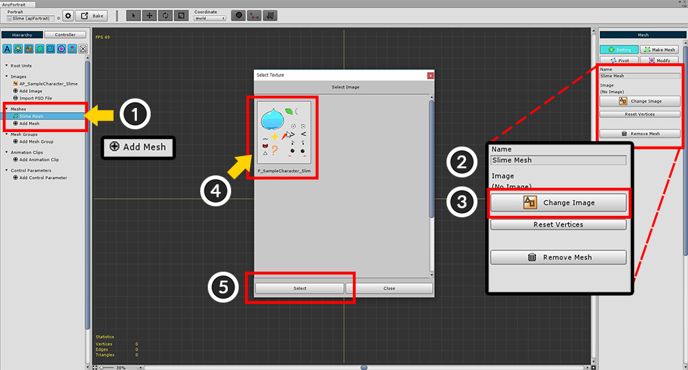
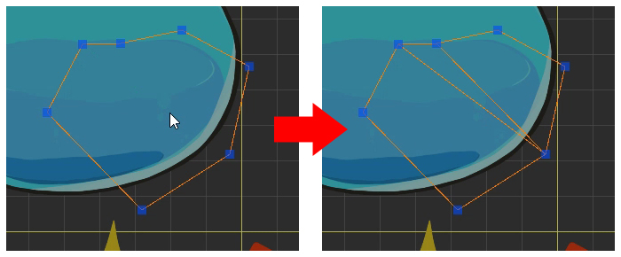
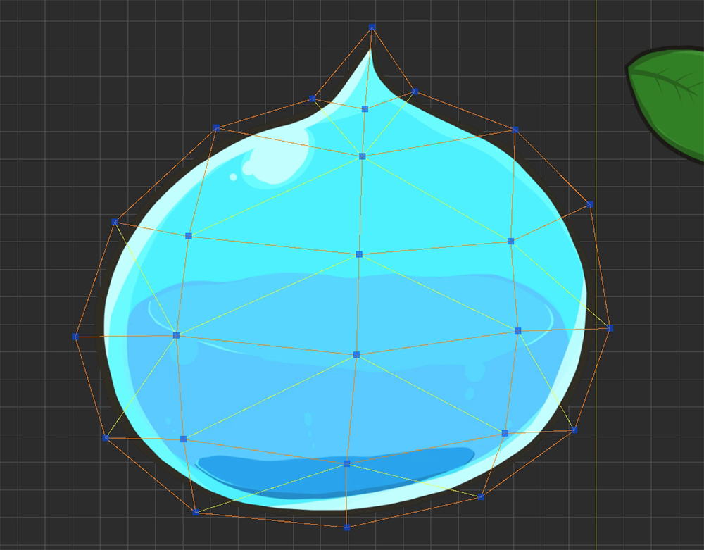

AnyPortrait > Getting Started > 1.3. Creating Meshes
1.3. Creating Meshes
1.0.0

In the Hierarchy UI, (1) Click the "Add Mesh" button and select the generated Mesh.
When you select Mesh, "Setting", "Mesh Edit", "Pivot", "Modify" menu appears on the right screen.
(2) Set the Mesh's Name with the Setting menu selected.
(3) Press the "Change Image" button to (4) Select the pre-created image and (5) Press the "Select" button.

Select the "Mesh Edit" menu in the right side UI.
Mesh can be created using the tools in the "Mesh Edit" menu.

Tools for editing meshes.
Left Click to Add or Connect.
Drag to Move a selected object
Right Click to delete.
1. Vertex+Edge Tool : Automatically connect segments as you add vertices.
2. Vertex Tool : Add vertices.
3. Edge Tool : Connect or turn edges.
4. Polygon Tool : Select a polygon. You can delete it with pressing Delete key.
5. Auto Link Edge : Automatically connect edges.
6. Make Polygons : Automatically generate Polygons after all the work is done.
7. Remove All Vertices : Delete all vertices.
A detailed explanation of the above functions is as follows.
(In Mac OSX, use the Command as a shortcut instead of the Control .)

1. Vertex+Edge Tool
Left Click : Add a vertex and connect an edge
Drag : Move a vertex
Right Click : Delete a vertex or an edge
Ctrl+Left Click : Snap to nearest vertex
Shift+Left Click : Create a vertex at intersection
Shift+Right Click : An edge is not deleted when vertex is deleted

2. Vertex Tool
Left Click : Add a vertex
Drag : Move a vertex
Right Click : Delete a vertex

3. Edge Tool
Left Click : Connect or Turn an edge
Right Click : Delete an edge
Ctrl+Left Click : Snap to nearest vertex
Shift+Left Click : Create a vertex at intersection

4. Polygon Tool
Left Click : Select a polygon
Delete Key : Delete a selected polygon

5. Auto Link Edge
When you press the button, edges are automatically created and connected.
It does not connect all vertices, it is a feature that makes it easy to make polygons.
Depending on the shape, the connection may be strange. You should check the execution result.

6. Make Polygons
When you press the button, polygon are automatically created according to vertices and edges.
This function must be executed because polygons must be created before rendering.
You can modify vertices even after polygons are created.
The calculated triangular meshes are represented by yellow lines.
After selecting the Edge tool, click this yellow edge line, then the selected edge will be Turned.
If a problem polygon occurs, you can delete the polygon or delete the vertex and work again.
Use the above functions to complete the body of the slime.

The process of creating a mesh is covered in more detail in the video tutorial.
Now you need to modify the Pivot.
In the current state, you can see that the position of the mesh is not the origin.
The Center Point of the mesh is very important, since it becomes the axis when "Rotate" or "Zoom".

Select (1) "Pivot" from the right menu. (If the polygon is not created at this time, nothing will be output.)
(2) Drag the mesh to the center of the grid.
The origin of the grid immediately becomes the center point of the mesh.

Create meshes for all images in the same way as above.
(If you can not distinguish between background and image, press Setting button to change background color.)